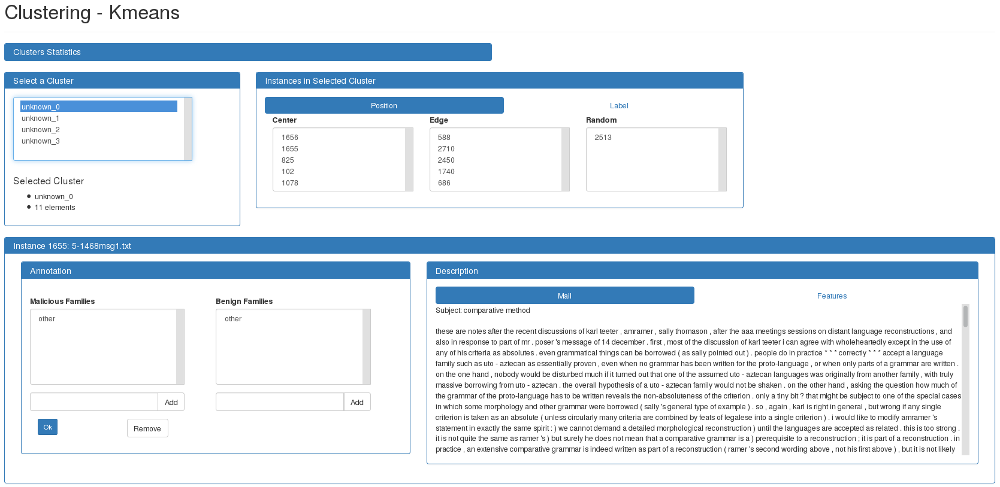

Clustering¶
The instances are clustered into a number of clusters specified by the user. Then, the user interface allows to display the instances in each cluster and to annotate them.
Usage¶
SecuML_clustering <project> <dataset> <algo>.For more information about the available options for a given clustering algorithm:
SecuML_clustering <project> <dataset> <algo> -h.Algorithms Available¶
Kmeans (scikit-learn documentation)
GaussiansMixture (scikit-learn documentation)
Graphical User Interface¶
The top panel, Clusters Statistics, can be opened to display the number of instances in each cluster. Selecting a cluster from the list allows to display its instances in the Description panel at the bottom.